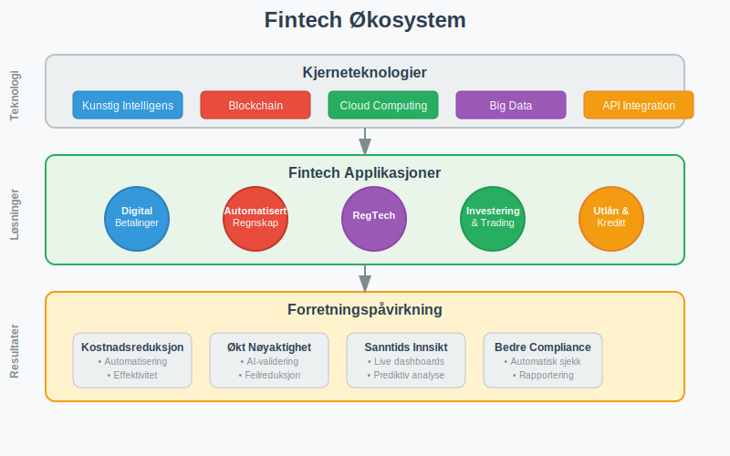
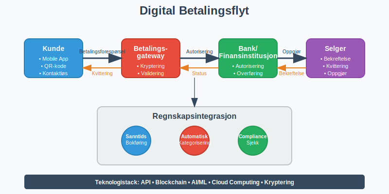
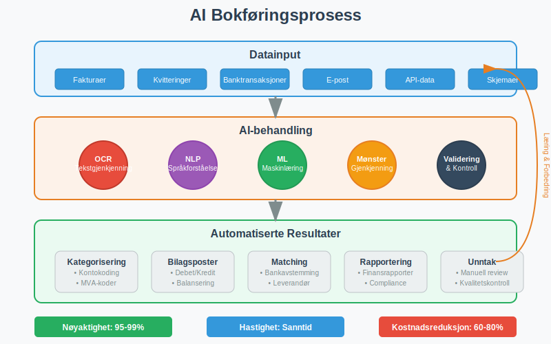
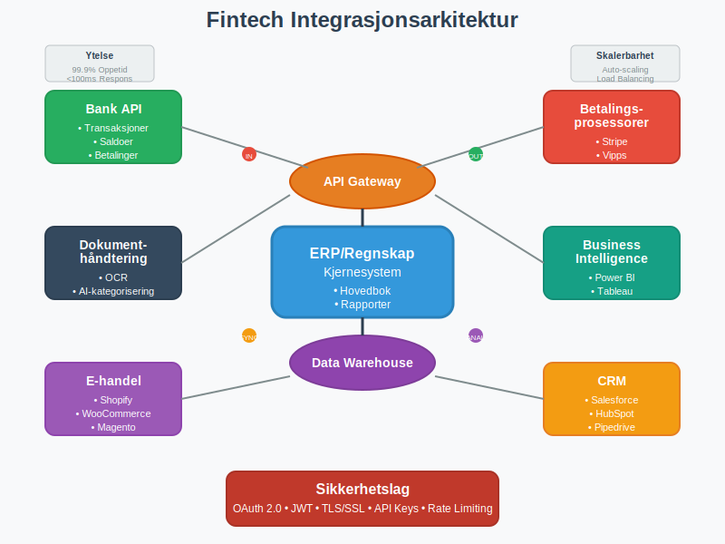
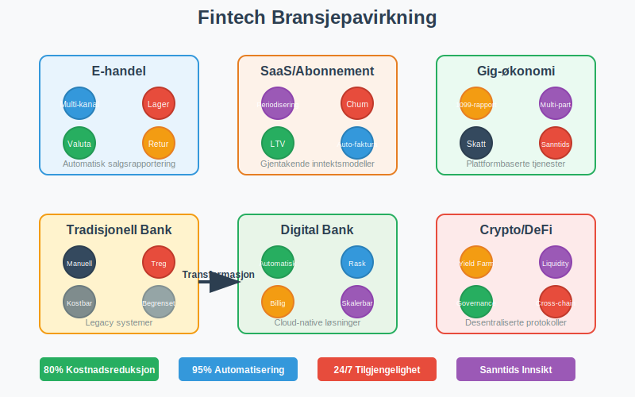
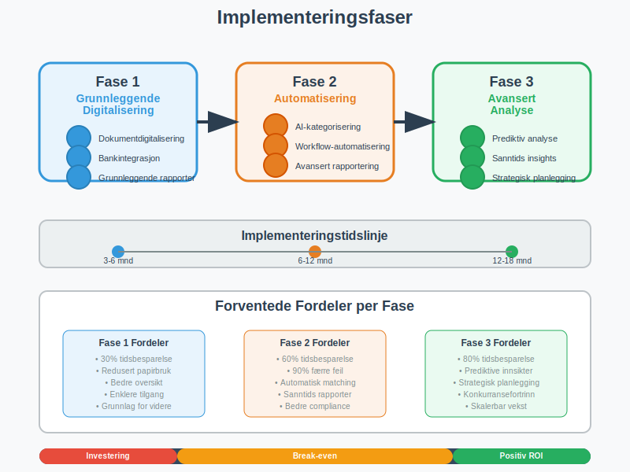

Fintech (finansteknologi) representerer den revolusjonerende sammensmeltingen av finansielle tjenester og avansert teknologi. Dette dynamiske feltet transformerer hvordan bedrifter håndterer regnskap, betalinger, og finansielle prosesser. Fra automatisert bokføring til kunstig intelligens-drevne analyser, fintech redefinerer den finansielle landskapet og skaper nye muligheter for effektivitet og innovasjon.
Seksjon 1: Grunnleggende Fintech-Konsepter
1.1 Definisjon og Omfang av Fintech
Fintech er en sammensetting av “financial” og “technology”, og omfatter alle teknologiske innovasjoner som forbedrer, automatiserer eller digitaliserer finansielle tjenester. I regnskapssammenheng inkluderer fintech:
- Automatisert bokføring: AI-drevne systemer som kategoriserer og registrerer transaksjoner
- Digitale betalingsløsninger: Moderne betalingsmetoder som påvirker kontantstrøm
- Blockchain og kryptovaluta (lær mer om kryptovaluta): Distribuerte hovedbøker for transparent regnskapsføring
- Regtech: Regulatorisk teknologi for compliance og rapportering
- Robo-advisory: Automatiserte investeringsrådgivningstjenester

1.2 Fintech’s Påvirkning på Tradisjonell Regnskap
Fintech-løsninger transformerer fundamentale regnskapsprosesser ved å:
- Redusere manuelle feil: Automatisering minimerer menneskelige feil i bilagsføring
- Øke hastighet: Sanntidsbehandling av transaksjoner og rapporter
- Forbedre nøyaktighet: Maskinlæring forbedrer kategorisering og matching
- Styrke compliance: Automatisk overholdelse av bokføringsregler
Seksjon 2: Digitale Betalingsløsninger og Regnskap
2.1 Moderne Betalingsmetoder
Fintech har revolusjonert betalingslandskapet med innovative løsninger som direkte påvirker regnskapsføring:
Mobile Betalinger og Digital Wallets
- Vipps og lignende tjenester: Øyeblikkelige overføringer som krever sanntids bokføring
- Apple Pay/Google Pay: Kontaktløse betalinger med komplekse transaksjonsdata
- QR-kode betalinger: Direkte kobling mellom fysiske og digitale transaksjoner
Kryptovaluta og Blockchain
Blockchain-teknologi skaper nye utfordringer og muligheter for regnskapsføring:
- Transparent hovedbok: Alle transaksjoner er sporbare og uforanderlige
- Smart contracts: Automatiske kontraktsutførelser som påvirker avtalegjeld
- Desentraliserte finanser (DeFi): Nye finansielle instrumenter uten tradisjonelle mellommenn

2.2 Integrasjon med Regnskapssystemer
| Betalingsmetode | Integrasjonskompleksitet | Sanntidsrapportering | Compliance-krav |
|---|---|---|---|
| Tradisjonell bankoverføring | Lav | Nei | Standard |
| Kortbetalinger | Middels | Delvis | PCI DSS |
| Mobile betalinger | Høy | Ja | Varierende |
| Kryptovalutaer | Svært høy | Ja | Utviklende |
| BNPL (Buy Now Pay Later) | Middels | Ja | Forbrukerrett |
Seksjon 3: Automatisert Bokføring og AI
3.1 Kunstig Intelligens i Regnskapsføring
AI-drevne regnskapssystemer transformerer hvordan bedrifter håndterer dokumentasjon:
Maskinlæring for Transaksjonskategorisering
- Automatisk kategorisering: AI lærer fra historiske data for å klassifisere nye transaksjoner
- Anomalideteksjon: Identifisering av uvanlige transaksjoner som krever manuell gjennomgang
- Prediktiv analyse: Prognoser for kontantstrøm og finansielle trender
Optisk Tegngjenkjenning (OCR) og Dokumentbehandling
Moderne fintech-løsninger kan:
- Skanne og tolke fakturaer: Automatisk utvinning av data fra fakturaer
- Behandle kvitteringer: Digital arkivering og kategorisering av bilag
- Validere data: Kryssjekking mot bankutskrifter og andre kilder

3.2 Robotic Process Automation (RPA) i Regnskap
RPA-teknologi automatiserer repetitive regnskapsoppgaver:
- Månedlig avstemming: Automatisk bankavstemming og kontoavstemminger
- Rapportgenerering: Automatisk produksjon av finansielle rapporter
- Compliance-sjekker: Kontinuerlig overvåking av regelverksetterlevelse
- Datamigrering: Sømløs overføring mellom ulike regnskapssystemer
Seksjon 4: Cloud-baserte Regnskapssystemer
4.1 Software as a Service (SaaS) for Regnskap
Cloud-baserte regnskapssystemer tilbyr betydelige fordeler:
Tilgjengelighet og Skalerbarhet
- 24/7 tilgang: Regnskapsdata tilgjengelig fra hvor som helst
- Automatiske oppdateringer: Alltid oppdatert med nyeste funksjoner og sikkerhetspatcher
- Skalerbar infrastruktur: Kapasitet som vokser med bedriftens behov
- Integrerte økosystemer: Sømløs kobling med andre forretningssystemer
Kostnadseffektivitet
| Tradisjonell Software | Cloud-basert SaaS |
|---|---|
| Høye oppstartskostnader | Lave månedlige kostnader |
| IT-infrastruktur påkrevd | Ingen infrastrukturkostnader |
| Manuelle oppdateringer | Automatiske oppdateringer |
| Begrenset skalerbarhet | Ubegrenset skalerbarhet |
| Lokale sikkerhetskopier | Automatisk backup i skyen |
4.2 Integrasjon og API-økonomi
Application Programming Interfaces (APIs) muliggjør sømløs integrasjon mellom ulike fintech-tjenester:
- Bankintegrasjon: Direkte tilkobling til bankkontoer for sanntids transaksjonshenting
- E-handelssystemer: Automatisk synkronisering av salgsdata
- CRM-systemer: Integrert kunde- og faktureringshåndtering
- Lønnssystemer: Automatisk overføring av lønnsdata til regnskapet

Seksjon 5: Regulatorisk Teknologi (RegTech)
5.1 Automatisert Compliance
RegTech-løsninger sikrer automatisk overholdelse av regnskapsstandarder:
Norske Regnskapsstandarder
- Automatisk bokføringsplikt-overvåking: Kontinuerlig sjekk av lovpålagte krav
- Bokføringsforskriften-compliance: Automatisk validering mot forskriftskrav
- MVA-rapportering: Automatisert merverdiavgiftsberegning og -rapportering
- Årsrapport-generering: Automatisk produksjon av lovpålagte rapporter
Internasjonale Standarder
- IFRS-compliance: Automatisk tilpasning til internasjonale regnskapsstandarder
- GDPR-overholdelse: Databeskyttelse og personvernhåndtering
- Anti-hvitvasking (AML): Automatisk overvåking av mistenkelige transaksjoner
5.2 Sanntids Rapportering og Overvåking
Moderne RegTech-systemer tilbyr:
- Kontinuerlig overvåking: 24/7 compliance-sjekker
- Automatiske varsler: Umiddelbare notifikasjoner ved avvik
- Prediktiv compliance: Forutsigelse av potensielle regelverksbrudd
- Automatisk dokumentasjon: Sporbarhet og revisjonssti for alle transaksjoner
Seksjon 6: Fintech’s Påvirkning på Ulike Bransjer
6.1 E-handel og Digital Handel
E-handelsintegrasjon krever spesialiserte regnskapsløsninger:
- Multi-kanal salgsrapportering: Konsolidering av salg fra ulike plattformer
- Automatisk lagerføring: Sanntids oppdatering av varelager
- Valutahåndtering: Automatisk omregning for internasjonalt salg
- Returstyring: Automatisert håndtering av refusjoner og krediteringer
6.2 Abonnementstjenester og SaaS-bedrifter
Abonnementsmodeller krever spesialiserte regnskapsbehandling:
- Periodisering av inntekter: Automatisk fordeling av abonnementsinntekter
- Churn-analyse: Prediktiv analyse av kundefrafall
- Lifetime Value (LTV) beregninger: Automatisk beregning av kundeverdier
- Automatisk fakturering: Gjentakende fakturaer og betalingsinnkreving
6.3 Gig-økonomi og Freelancing
Plattformøkonomi skaper nye regnskapsutfordringer:
- 1099-rapportering: Automatisk rapportering av freelancer-betalinger
- Multi-part transaksjoner: Håndtering av plattformavgifter og provisjoner
- Skatteoptimalisering: Automatisk beregning av fradrag og skatteforpliktelser
- Sanntids inntektssporing: Øyeblikkelig synlighet i inntjening

Seksjon 7: Fremtidige Trender og Teknologier
7.1 Emerging Technologies
Neste generasjons fintech-teknologier som vil påvirke regnskap:
Quantum Computing
- Komplekse beregninger: Øyeblikkelig behandling av massive datasett
- Kryptografi: Ny sikkerhet for finansielle transaksjoner
- Optimalisering: Avanserte algoritmer for finansiell planlegging
Internet of Things (IoT) og Regnskap
- Smart contracts: Automatiske betalinger basert på IoT-data
- Supply chain tracking: Sanntids sporbarhet av varer og tjenester
- Automatisk fakturering: IoT-utløste faktureringsprosesser
7.2 Bærekraft og ESG-rapportering
Environmental, Social, and Governance (ESG) rapportering blir stadig viktigere:
- Karbonregnskap: Automatisk sporing av miljøpåvirkning
- Bærekraftsmetrikker: Integrerte ESG-indikatorer i finansielle rapporter
- Stakeholder-rapportering: Automatiserte rapporter til ulike interessenter
- Impact measurement: Kvantifisering av sosial og miljømessig påvirkning
7.3 Desentraliserte Finanser (DeFi) og Regnskap
DeFi-protokoller skaper nye regnskapsutfordringer:
- Yield farming: Komplekse avkastningsstrategier som krever spesialisert regnskapsføring
- Liquidity mining: Automatisk belønning for likviditetstilførsel
- Governance tokens: Nye former for eierskap og stemmerett
- Cross-chain transactions: Transaksjoner på tvers av ulike blockchain-nettverk
Seksjon 8: Implementering av Fintech-løsninger
8.1 Evaluering og Utvelgelse
Kriterier for valg av fintech-løsninger:
| Evalueringskriterium | Vektning | Viktige Faktorer |
|---|---|---|
| Funksjonalitet | 30% | Dekker forretningsbehov, skalerbarhet |
| Integrasjon | 25% | API-tilgjengelighet, kompatibilitet |
| Sikkerhet | 20% | Datakryptering, compliance |
| Kostnad | 15% | Total eiekostnad, ROI |
| Support | 10% | Kundeservice, opplæring |
Due Diligence Prosess
- Leverandørvurdering: Finansiell stabilitet og track record
- Sikkerhetstesting: Penetrasjonstesting og sårbarhetsanalyse
- Referansesjekk: Erfaringer fra eksisterende kunder
- Pilot-testing: Begrenset implementering for evaluering
8.2 Implementeringsstrategi
Fasevis implementering reduserer risiko og sikrer suksess:
Fase 1: Grunnleggende Digitalisering
- Dokumentdigitalisering: Overgang fra papir til digitale bilag
- Bankintegrasjon: Automatisk import av banktransaksjoner
- Grunnleggende rapportering: Standardiserte finansielle rapporter
Fase 2: Automatisering
- AI-kategorisering: Automatisk klassifisering av transaksjoner
- Workflow-automatisering: Automatiserte godkjenningsprosesser
- Avansert rapportering: Tilpassede dashboards og analyser
Fase 3: Avansert Analyse
- Prediktiv analyse: Prognoser og trendanalyse
- Sanntids insights: Øyeblikkelige forretningsinnsikter
- Strategisk planlegging: AI-assistert finansiell planlegging

Seksjon 9: Sikkerhet og Risikohåndtering
9.1 Cybersikkerhet i Fintech
Kritiske sikkerhetstiltak for fintech-implementering:
Datakryptering og Beskyttelse
- End-to-end kryptering: Beskyttelse av data i transit og hvile
- Multi-faktor autentisering: Flere lag med sikkerhet
- Zero-trust arkitektur: Kontinuerlig verifisering av tilgang
- Regular security audits: Periodiske sikkerhetsvurderinger
Compliance og Regulering
- PCI DSS: Kredittkortdatasikkerhet
- GDPR: Personvernbeskyttelse
- PSD2: Betalingstjenestedirektivet
- Norske personvernlover: Lokal compliance
9.2 Operasjonell Risiko
Risikofaktorer ved fintech-implementering:
- Systemnedetid: Backup-systemer og redundans
- Dataintegritetsrisiko: Validering og kvalitetskontroll
- Leverandørrisiko: Avhengighet av tredjepartsleverandører
- Kompetanserisiko: Behov for opplæring og kompetanseutvikling
Seksjon 10: Kostnader og ROI
10.1 Kostnad-Nytte Analyse
Typiske kostnader ved fintech-implementering:
| Kostnadskategori | Engangsbeløp | Løpende Kostnader | Besparelser |
|---|---|---|---|
| Software-lisenser | 50,000-200,000 NOK | 10,000-50,000 NOK/mnd | - |
| Implementering | 100,000-500,000 NOK | - | - |
| Opplæring | 25,000-100,000 NOK | 5,000-20,000 NOK/mnd | - |
| Vedlikehold | - | 15,000-75,000 NOK/mnd | - |
| Tidsbesparelser | - | - | 100,000-500,000 NOK/mnd |
| Feilreduksjon | - | - | 25,000-150,000 NOK/mnd |
10.2 Måling av Suksess
Key Performance Indicators (KPIs) for fintech-implementering:
Effektivitetsmålinger
- Behandlingstid: Reduksjon i tid for regnskapsoppgaver
- Feilrate: Reduksjon i manuelle feil
- Automatiseringsgrad: Andel automatiserte prosesser
- Brukeradopsjon: Andel ansatte som aktivt bruker systemet
Finansielle Målinger
- Return on Investment (ROI): Finansiell avkastning på investering
- Cost per transaction: Kostnad per behandlet transaksjon
- Time to value: Tid før positive effekter realiseres
- Total Cost of Ownership (TCO): Totale eiekostnader over tid
Konklusjon
Fintech representerer en fundamental transformasjon av hvordan bedrifter håndterer finansielle prosesser og regnskapsføring. Fra automatisert bokføring til AI-drevne analyser, fintech-løsninger tilbyr enorme muligheter for økt effektivitet, nøyaktighet og innsikt.
Suksessful implementering krever grundig planlegging, riktig teknologivalg, og fokus på sikkerhet og compliance. Bedrifter som omfavner fintech-innovasjon posisjonerer seg for fremtidens digitale økonomi, mens de som nøler risikerer å bli hengende etter i et stadig mer konkurransedyktig marked.
Nøkkelbudskap:
- Fintech transformerer alle aspekter av finansielle tjenester og regnskap
- Automatisering og AI reduserer kostnader og forbedrer nøyaktighet
- Cloud-baserte løsninger tilbyr skalerbarhet og fleksibilitet
- Sikkerhet og compliance må prioriteres i alle implementeringer
- ROI realiseres gjennom økt effektivitet og reduserte feilkostnader
Fremtiden tilhører bedrifter som strategisk integrerer fintech-løsninger i sine finansielle prosesser, og skaper dermed grunnlag for bærekraftig vekst og konkurransefortrinn i den digitale økonomien.